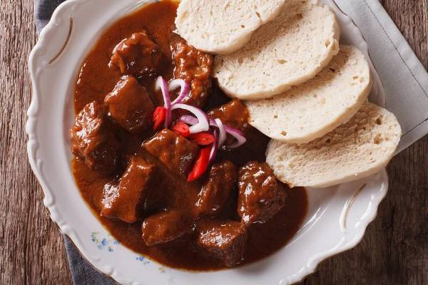

Recept na Guláš

Postup:
Krok 1:
Připravte si všechny suroviny.
Známá poučka, že cibule má být stejné množství jako masa, má něco do sebe: cibule dodá omáčce nejen chuť, ale také ji zahustí, takže nebude potřeba mouka.
Z masa je nejlepší hovězí kližka – po dobrém uvaření krásně změkne a přitom zůstane šťavnatá.
Krok 2:
Cibuli pokrájejte najemno a nechte ji přímo v tlakovém hrnci zesklovatět na rozehřátém sádle.
Přidejte maso nakrájené na dvoucentimetrové kostky a ještě asi deset minut zprudka restujte, až začne zlátnout – nejprve možná pustí vodu, ale ta se při vysoké teplotě po chvíli odpaří.
Krok 3:
Vmíchejte rajský protlak a papriku s kmínem, nechte jen pár vteřin rozvonět a poté ihned zalijte asi 750 ml tekutiny.
Přidejte pivo, ale použít můžete i vodu nebo pivo s vodou namíchat.
Krok 4:
Přidejte pořádnou lžičku soli, hrnec uzavřete, přiveďte k varu a vařte hodinu.
V tlakovém hrnci stačila opravdu hodina od chvíle, kdy se maso začalo vařit, aby bylo perfektně měkké.
Při klasické přípravě počítejte s dvěma až třemi hodinami a kontrolujte, jestli je v hrnci dostatek tekutiny.
Krok 5:
Kdyby byla omáčka příliš řídká, guláš bez poklice ještě chvíli zprudka povařte, aby se odpařila šťáva.
Vmíchejte prolisovaný česnek a majoránku a podle chuti osolte a opepřete.
Krok 6:
Podávejte s domácím knedlíkem či pečivem a posypané čerstvou cibulkou.
Ingredience:
1kg Hovězí kližky
1kg Cibule
2 Lžíce sádla
2 Lžíce mleté sladké papriky
1 Lžička drceného kmínu
2 Lžíce rajčatového protlaku
Sůl
Pepř
1 Lžička majoránky
4 Stroužky česneku
750ml Piva